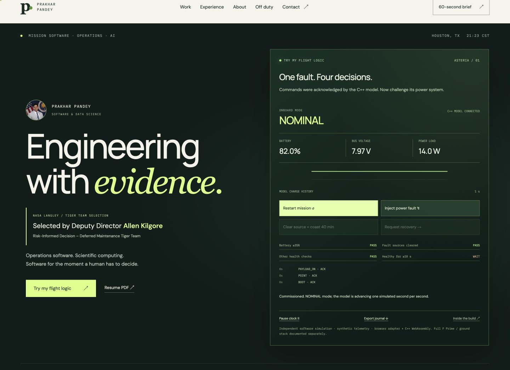
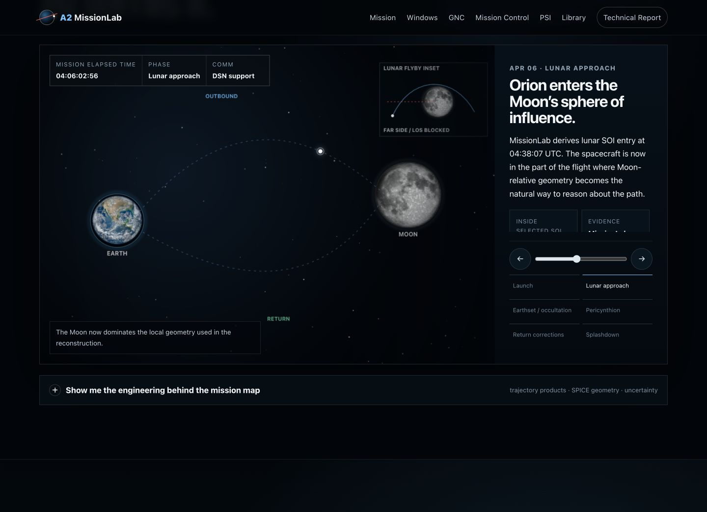
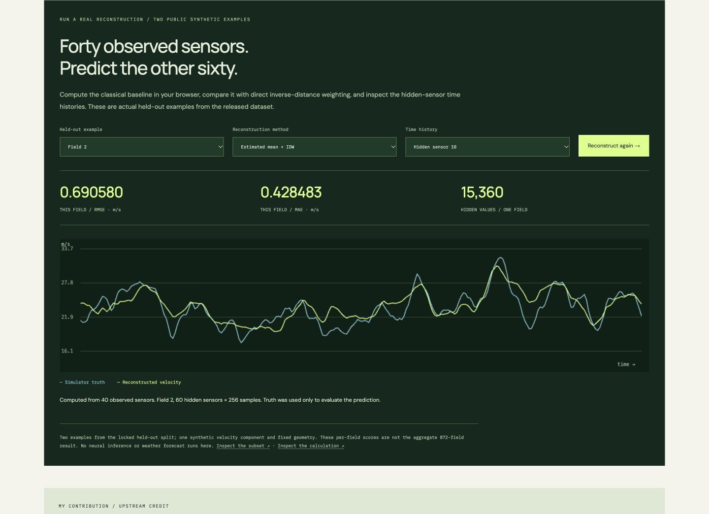

Asteria — FlightStack & MissionOps
A spacecraft software laboratory, from C++ flight logic to the operator’s console.

PRAKHAR PANDEY
SOFTWARE & DATA SCIENCE
Selected by Deputy Director Allen Kilgore
Risk-Informed Decision – Deferred Maintenance Tiger TeamOperations software. Scientific computing.
Software for the moment a human has to decide.
Start the model, introduce a power fault, then decide when recovery is safe.
A tiny spacecraft. Real flight logic.
No signup. The compiled C++ model runs in this tab.
Independent software simulation · synthetic telemetry · browser adapter + C++ WebAssembly. Full F Prime / ground stack documented separately.
SOFTWARE THAT HOLDS UP TO QUESTIONS.
I’m a software and data-science engineer drawn to systems where correctness, uncertainty and human decisions meet.
My work spans enterprise application modernization, GPU inference benchmarking, scientific machine learning and independent mission software. The common thread: clear interfaces, reproducible results and evidence you can inspect.
A little more about me ↗A QUICK WAY INTO THE DETAILS
Choose a discipline.
Follow the work behind it.
MISSION SOFTWARE / OPERATIONS / VERIFICATION
Asteria connects C++ flight behavior, F Prime, fault protection and a ground console. A2 MissionLab adds public-data geometry and evidence-aware mission analysis.
01 / SELECTED WORK
Showing 6 projects
A spacecraft software laboratory, from C++ flight logic to the operator’s console.
An evidence-aware Artemis II explorer connecting trajectory, systems and mission context.
A turbofan remaining-life platform that makes uncertainty part of the interface.
Jordan or LeBron? A reproducible study of how the answer changes with your values.
Numerical reproduction, a controlled speed study, and a classical baseline that challenged the neural model.
Vibration analysis and alert evaluation that keep generalization limits in view.
Independent mission projects use public data or simulation. Work samples preserve the distinction between a prototype, a measured experiment and an operational system.
BEHIND THE BUILD / THREE SHORT WALKTHROUGHS

▶ LIVE CAPTUREA flight/ground software lab that makes command outcomes, autonomous protection and operational evidence visible.
Follow the engineering ↗
▶ LIVE CAPTUREA public-data mission reconstruction connecting trajectory geometry, engineering models and the precision of the available evidence.
Follow the engineering ↗
▶ LIVE CAPTUREA numerical optimization study paired with a held-out reconstruction comparison that gives the simpler baseline its due.
Follow the engineering ↗02 / EXPERIENCE
Engineering across operations,
infrastructure and applied ML.
Center Operations Directorate
AUG 2026 — PRESENT
AI-Augmented Software Engineer · OSTEM Intern
The Tiger Team assignment concerns a proposed AI Safety Asset Identifier: extracting hazard evidence, matching MAXIMO assets, presenting confidence-ranked findings for expert review and assessing maintenance-data feasibility. Work is scoped as investigation and design. The center context is approximately 200 facilities and 3,400 civil-service / contractor personnel; those are center-wide figures, not application-user counts. Additional research includes Wind VISION and condition monitoring.
AI infrastructure
NOV 2025 — AUG 2026
Software & AI Engineering Intern
Beyond the benchmark corpus, I evaluated maintainability and failure behavior through competing implementation options. On Qwen3-32B-FP8 at concurrency 16, the documented comparison was 1,746 versus 1,343 tokens/s for vLLM and SGLang; on Qwen3.6-27B at concurrency 1, TensorRT-LLM versus vLLM time-to-first-token was 1.68 versus 0.26 seconds. These are model/workload-specific findings. The intensive final documented phase ran May–August 2026. Candidate PRs were open at handoff.
Wearable data research
OCT — DEC 2025
Data Science Intern
Research analyses used wearable and environmental observations. They are not clinically validated diagnostic or treatment tools; unsupported noise-reduction and time-savings claims are omitted.
AltoGPT
JUN — SEP 2025
Machine Learning / AI Engineering Intern
A demonstration using mock historical and weather inputs, not a confirmed customer production deployment. The available evidence does not establish sole ownership of every module.
ALSO PART OF THE JOURNEY
Analytics contribution supporting Rice’s NCAA Division I women’s soccer team.
Perception-subteam contribution within an autonomous-vehicle engineering program.
Dashboards and analysis of engagement and commerce data for a mission-driven organization.
03 / THE WIDER COLLECTION
From early Java data structures to mission software. An honest view of the coursework, team projects, experiments and learning resources along the way.
No repositories match. Try “Java”, “mission” or “data”.
The traffic repositories are related team coursework, not two separate personal products. The digital-media repository is a learning reference with third-party curriculum credited to its authors.
04 / THE PERSON BEHIND THE WORK
I like connecting what a system does with what a person needs to decide.
That has taken me from debugging enterprise workflows at NASA Langley to checking whether GPU benchmarks are actually comparable, and from simulated spacecraft faults to the assumptions behind a basketball ranking.
I earned my B.S. in Computer Science at Virginia Tech and am pursuing a Master of Data Science at Rice. My strongest interest is mission and flight-control operations. I’m also interested in ground software, systems verification, scientific computing and AI engineering where my experience fits.
I enjoy the work between a promising idea and a defensible result: understanding the data, tracing a failure, testing a simpler baseline, and explaining what the evidence supports.
Expected December 2027 · GPA 3.66 / 4.00
Data-Centric Computing · Cum Laude
GPA 3.42 / 4.00
Dean’s List · Spring 2023, Fall 2023,
Fall 2024 and Spring 2025
Additional training
Confluent data streaming / Apache Kafka fundamentals; responsible-AI security, compliance and governance.
OFF DUTY / THE OTHER SIDES OF ME
Engineering is a big part of my life.
Here are a few other parts.
01 / THE TEAMS
I follow the Toronto Maple Leafs, Dallas Cowboys, Dallas Mavericks, Liverpool and Ferrari F1. There’s usually a game, a race or a debate worth talking about.
02 / THE ROTATION
I love Michael Jackson. Off the Wall is a favorite album, and these are some of my favorite songs:
03 / ON COURT
I competed with Rice Club Tennis and represented Rice at Texas Sectionals as a player. I also love watching tennis, and I’m a Roger Federer fan.
05 / TOOLS, WITH CONTEXT
Python · C++17 · JavaScript · SQL · Java · CFML / Lucee
Enterprise workflows, APIs, simulation and tested interfaces.PyTorch · scikit-learn · PhysicsNeMo · NumPy · SciPy · Pandas
Model evaluation, signal processing, uncertainty and numerical reproducibility.Docker · Kubernetes · GitHub Actions · SQL Server · Oracle · PostgreSQL
Reproducible environments, relational integrity and release verification.F Prime · Open MCT · FastAPI · SPICEyPy · vLLM · SGLang
Independent mission labs and professional inference benchmarking.LET’S BUILD SOMETHING THAT MATTERS.
↑I’m interested in software, AI and mission-systems
opportunities where rigor makes a difference.